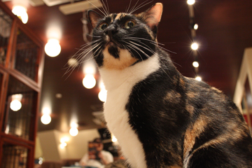
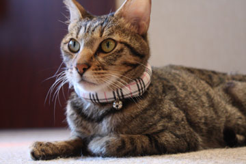
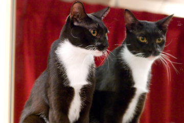
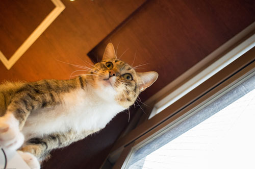
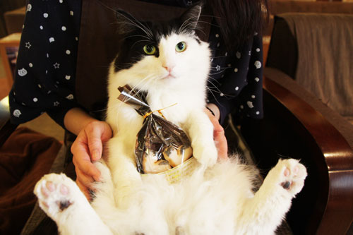
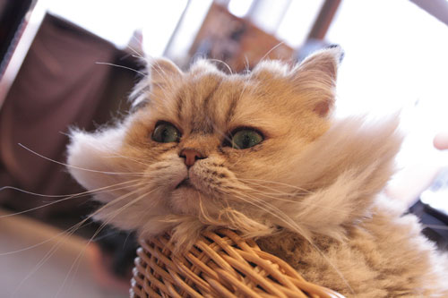
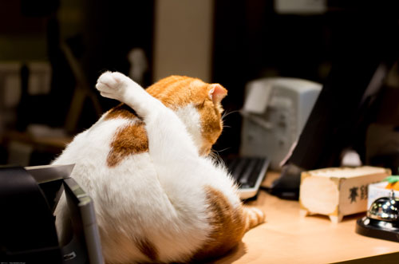
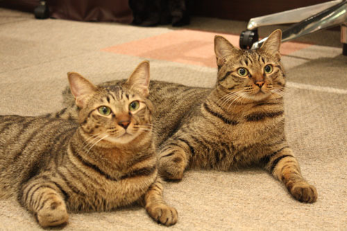
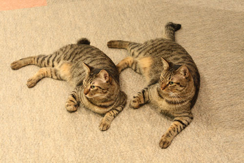

在籍猫
-

猫１０：いと
みんなのお母さん。
誰でも分け隔てなく世話を焼き、逆らう者には容赦ない。町田店のシャルロッテ・にしんの子。お客さん宅に里子に出た後、出戻りした。
-

猫１５：きり
みんなのお父さん。
喧嘩は強いが、嫁には一貫して尻に敷かれ続けている。町田店の茶太狼・ヴィクトリカの子。いとと姉弟同然に育ち、結婚。一緒に出戻りした。
-

猫２７：しお
重度のファザコン。
父親がかまってくれないと当たり散らす。執事のような模様がトレードマーク。いと・きり夫婦の息子。
-

猫２８：ちま
重度のマザコン。
引き篭もり、ツンデレと、なかなか一般受けしない属性が多い。しおの妹。
-

猫３０：アルマウェル
かまってちゃん。
クールな顔して構って尻尾ふりふりアピールを繰り返し、相手にされないと悪さをする。ノルウェージャンフォレストキャット。 2015/05、腎機能障害で半引退。
-

猫３２：どんぐり
往年の美少年。
初代看板猫を務めたが、現在はただのじじい。暑熱に弱く、夏はサマーカットになる。チンチラ。
-

猫３３：ピタゴラ＝スイッチ
おっさん猫。
コミカルな動き。理解不能な挙動。
紛うことなき、おっさんである。299のあるビルの隙間に居たところを保護された。
-

猫３４：チョロ
２９９の良心。
穏やかで面倒見が良く、色んな猫と仲良し。
運動不足による肥満と便秘に悩んでいる。元捨て猫。写真右は弟：ニョロ。
-

猫３５：ニョロ
武闘派。
兄の分の闘争心も一身に兼ね備えたかのように闘う。が、大人になった今はおとなしい。尻尾がチョロっとしてるのが兄。